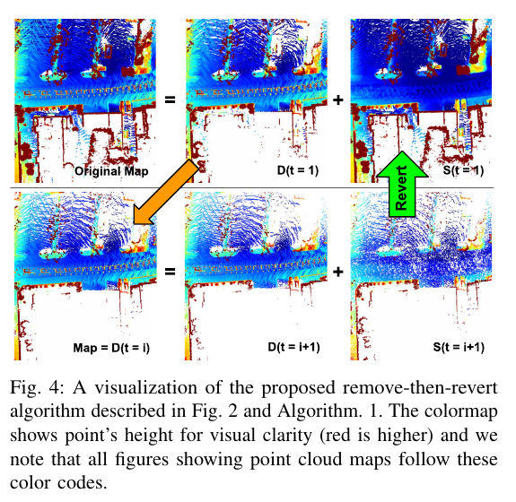
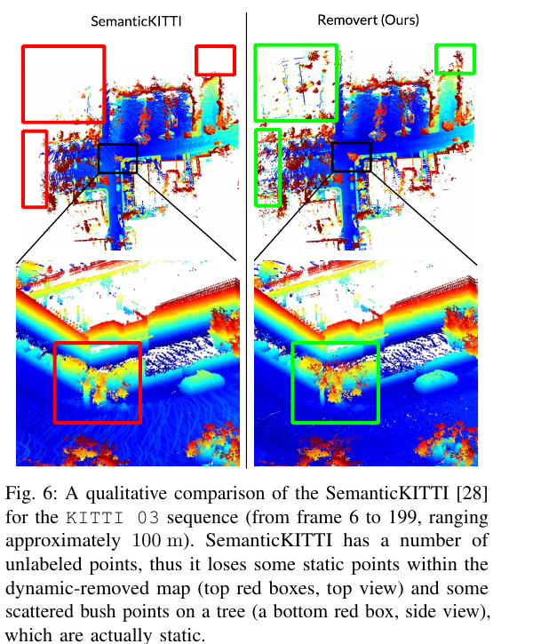

Robotics Research Reader · Stage 1
Remove, then Revert: Static Point cloud Map Construction using Multiresolution Range Images
材料覆盖范围：完整阅读当前 PDF 的摘要、正文、图表、实验、限制与结论，并视觉核对本页嵌入的关键原图与表格裁剪。原文件为
离线交付说明：本报告采用 HTML + 同目录
Remove, then Revert_ Static Point cloud Map Construction using Multiresolution Range Images(科研通-ablesci.com).pdf。本页严格限于 Stage 1：只还原论文故事线，不读取代码，不用第三方解读补写。离线交付说明：本报告采用 HTML + 同目录
images/ 的相对路径打包；移动或保存时需保留两者的相对目录结构。页面不依赖外部脚本、CDN 或远程字体。一、论文一句话在做什么
概括Removert 先用严格可见性关系保守删除疑似动态点，再逐级降低 range image 分辨率、扩大隐式 query–map 关联窗口，把因位姿/配准误差而误删的静态点逐步恢复。 （Abstract；Sec. I；Sec. III；Figs. 2、4；PDF pp. 1–4）
二、Research Problem
具体问题：从含车辆和行人的城市点云地图中构造静态地图。 （Abstract；Sec. I 前两段；PDF p. 1）
场景：户外 SLAM、先验地图定位、地图维护与更新。 （Abstract；Sec. I 前两段；PDF p. 1）
重要性：静态结构是鲁棒定位和长期地图的基础。 （Abstract；Sec. I 前两段；PDF p. 1）
后果：动态残留造成假结构，错误删除又损害地图完整性。 （Abstract；Sec. I 前两段；PDF p. 1）
三、Existing Methods & Gap
| 方法类别 | 原本怎么解决 | 作者指出的不足及影响 |
|---|---|---|
| 时序/占据更新 | 连续融合可见性并更新点状态 | 常假设位姿/配准正确，关联误差会误删静态点。 （Sec. I；Sec. II-A；PDF pp. 1–2） |
| 固定角窗可见性 | 在固定范围寻找 scan–map 对应 | 固定窗口不能表达不同程度运动误差。 （Sec. I；Sec. II-A；PDF pp. 1–2） |
| 语义分割 | 按动态类别删除点 | 依赖监督标签，受未知类别和人工标注误差影响。 （Sec. II-A；PDF p. 2） |
概括作者把统一缺口概括为：在 LiDAR 位姿和 scan-to-map 关联存在误差时，仍需删除动态点并恢复被误删的静态点。 （Sec. I，段首 ‘In this paper, we propose two mechanisms…’；PDF p. 2）
四、Core Observation / Insight
- 原始观察
位姿误差会使单尺度 visibility association 关联到错误地图点。原文依据
作者在引言和相关工作中说明固定角度关联依赖正确配准。如何引出算法
概括使用多分辨率 range images 隐式扩大关联窗口。 （Sec. I；Sec. II-A；Sec. III-D；PDF pp. 1–5） - 原始观察
批量强力 remove 会把部分真实静态点一起删除。原文依据
Fig. 4 上排展示初始 dynamic map 包含静态结构；Fig. 9 记录 FN。如何引出算法
概括先 remove，再随分辨率递减逐级 revert 高置信静态点。 （Sec. III-C–D；Figs. 4、9；PDF pp. 4, 7）
五、Method：只看宏观逻辑
做了什么：输入多帧配准后的 query scans 与含动态残影的原始地图。
为什么：批处理可跨多个视角统计每个地图点的静态/动态证据。 （Sec. III-A–C；Fig. 2；PDF pp. 2–4）
为什么：批处理可跨多个视角统计每个地图点的静态/动态证据。 （Sec. III-A–C；Fig. 2；PDF pp. 2–4）
做了什么：把 query scan 与 map 投影为 range image，并按 visibility 计算 discrepancy。
为什么：二维 range image 使 scan-to-map 可见性比较高效。 （Sec. III-B；Fig. 3；PDF pp. 2–4）
为什么：二维 range image 使 scan-to-map 可见性比较高效。 （Sec. III-B；Fig. 3；PDF pp. 2–4）
做了什么：累计 static/dynamic marks，先批量删除低 staticity score 点。
为什么：作者优先彻底移除动态残影，即使暂时产生较多 FN。 （Sec. III-C；Eqs. (7)–(8)；Algorithm 1；PDF p. 4）
为什么：作者优先彻底移除动态残影，即使暂时产生较多 FN。 （Sec. III-C；Eqs. (7)–(8)；Algorithm 1；PDF p. 4）
做了什么：逐轮降低 range-image 分辨率并 revert 被误删点。
为什么：更粗分辨率提供更大的隐式关联窗口，用于容忍位姿误差并恢复静态点。 （Sec. III-D；Fig. 4；Algorithm 1；PDF pp. 4–5）
为什么：更粗分辨率提供更大的隐式关联窗口，用于容忍位姿误差并恢复静态点。 （Sec. III-D；Fig. 4；Algorithm 1；PDF pp. 4–5）
做了什么：输出静态地图，并可反向解析动态对象。
为什么：静态地图既服务定位/地图维护，也能生成动态对象伪标签。 （Sec. IV-B–C；Figs. 6–10；PDF pp. 6–8）
为什么：静态地图既服务定位/地图维护，也能生成动态对象伪标签。 （Sec. IV-B–C；Figs. 6–10；PDF pp. 6–8）

概括核心变化是把一次性动态点删除改为 batch remove 后的 multiresolution revert，用逐级扩大关联范围来容忍 LiDAR motion ambiguity。 （Sec. I；Sec. III-C–D；Figs. 2、4；Algorithm 1；PDF pp. 2–5）
六、Contributions
- 提出 remove-then-revert 的批处理静态地图构造。 （Sec. I ‘Our contributions are threefold’；PDF p. 2） 类别：Method
- 用多分辨率 range image 隐式处理 LiDAR 运动/配准误差。 （Sec. I ‘Our contributions are threefold’；PDF p. 2） 类别：Modeling / Insight
- 在 KITTI/SemanticKITTI 上验证，并展示自解析城市动态物体标签。 （Sec. I ‘Our contributions are threefold’；PDF p. 2） 类别：Experiment / Other
七、Experiments
| Dataset | KITTI/SemanticKITTI 多序列，并补充 MulRan 示例。 （Sec. IV-A–B；Figs. 6–7；PDF p. 6） |
|---|---|
| 与哪些方法比较 | 主要与 SemanticKITTI 构造的静态地图以及既有 visibility/occupancy 路线比较。 （Sec. IV-A–B；Fig. 6；PDF p. 6） |
| 评价指标 | TP、FP、FN 及其随 remove/revert 迭代的变化；另有大量定性比较。 （Sec. IV-A–B；Figs. 8–9；PDF pp. 6–7） |
| 硬件/实验环境 | 论文未明确说明论文未明确说明计算硬件。 （Sec. IV；PDF pp. 5–8） |
| 是否有消融实验 | 论文未明确说明论文未报告传统模块消融；展示 remove/revert 各迭代的演化。 （Sec. IV-B；Figs. 8–9；PDF p. 7） |
| 是否有参数实验 | 有分辨率日程、staticity weights 和阈值设置，但未给完整敏感性曲线。 （Sec. IV-A；PDF p. 6） |
| 是否有定性实验 | 有；KITTI、MulRan、动态对象解析和失败案例。 （Figs. 1、5–7、10–11；PDF pp. 1, 5–8） |
| 是否有定量实验 | 有；TP/FP/FN 的迭代变化。 （Figs. 8–9；PDF p. 7） |

实验
KITTI/MulRan 定性地图
结果Figs. 6–7 中，Removert 删除车辆/行人残影并保留更多建筑、路面和树木结构。
作者据此得出的结论作者认为方法可适用于不同 LiDAR FOV，并能兼顾动态删除与静态保持。
来源Sec. IV-B；Figs. 6–7；PDF p. 6
实验
remove/revert 迭代
结果Fig. 9 显示 revert 过程中 FN 大量下降，而 FP 增长较小。
作者据此得出的结论作者据此认为恢复的静态点占主导。
来源Sec. IV-B；Figs. 8–9；PDF p. 7
实验
动态对象解析
结果Fig. 10 展示汽车、公交、行人、狗、婴儿车和自行车等由静态地图反向解析出的对象。
作者据此得出的结论作者认为该输出可作为无需形状先验的动态对象伪标签。
来源Sec. IV-C；Fig. 10；PDF pp. 7–8
实验
与人工标签的模糊区域比较
结果Fig. 6 中 SemanticKITTI 未标注区域会丢失部分实际静态点，而 Removert 保留了其中一些结构。
作者据此得出的结论作者据此提出其定性结果在这些模糊区域可能优于人工标签；这不是全序列定量结论。
来源Sec. IV-B；Fig. 6；PDF p. 6
八、Limitations
作者明确承认的 limitation
作者明确指出：range image 的 visibility 只选最近点，因此可能看不到静态遮挡物后的动态点；Fig. 11 的水泥隔离带造成漏删。 （Sec. IV-D；Fig. 11；PDF p. 8）
从实验结果中直接可见，但作者没有明确称为 limitation 的现象
直接观察‘优于人工标签’只由 Fig. 6 的模糊区域定性展示支持，不能视为全序列总体定量优势。 （Sec. IV-B；Fig. 6；PDF p. 6）
九、Future Work / Research Implications
作者计划把 Removert 应用于多 session 数据，并扩展到 long-term change detection 和 map update。 （Sec. V；PDF p. 8）
十、论文逻辑链
概括现实问题：动态对象残影污染静态地图并影响定位与维护。 （Sec. I；PDF p. 1）
概括现有方法：基于 visibility/occupancy 更新或语义分割删除动态点。 （Sec. I–II；PDF pp. 1–2）
概括不足：位姿误差破坏 scan-to-map 关联，监督标签也可能遗漏未知类。 （Sec. I；Sec. II-A；PDF pp. 1–2）
概括观察：先强力删除后，可用更粗 range image 恢复被误删静态点。 （Sec. III-C–D；Fig. 4；PDF p. 4）
概括思想：把动态删除拆成 remove 与 multiresolution revert。 （Sec. I；Sec. III-D；PDF pp. 2, 4–5）
概括方法：range-image discrepancy、batch marks、remove/revert 迭代。 （Sec. III；Algorithm 1；Figs. 2–4；PDF pp. 2–5）
概括验证：KITTI/MulRan 定性结果、TP/FP/FN 演化和失败案例。 （Sec. IV；Figs. 6–11；PDF pp. 5–8）
概括结论：作者认为方法能删除动态点并恢复静态结构，还可支持动态对象伪标签。 （Sec. V；PDF p. 8）
十一、第一遍阅读结束后，我应该记住的东西
- 概括解决动态城市点云中的静态地图构造。 （Sec. I；PDF p. 1）
- 概括核心 gap 是 scan–map 关联依赖不完美位姿，固定窗口会误删。 （Sec. I；Sec. II-A；PDF pp. 1–2）
- 概括最关键 insight 是 range-image 分辨率可以充当关联置信尺度。 （Sec. III-C–D；Fig. 4；PDF p. 4）
- 概括核心变化是“先删除、后多分辨率恢复”。 （Sec. III；Algorithm 1；Figs. 2–4；PDF pp. 2–5）
- 概括最重要结果是 revert 迭代中 FN 显著下降而 FP 增长较小。 （Sec. V；PDF p. 8）
十二、暂时不要深入的内容
- 概括range image 投影与可见性判定（Sec. III-A）。
- 概括Remove/Revert 伪代码和分辨率日程（Algorithm 1；Fig. 4）。
- 概括KITTI 各序列的 TP/FP/FN 定量表。
- 概括遮挡情况下单最近点表示的失效机制（Fig. 11）。